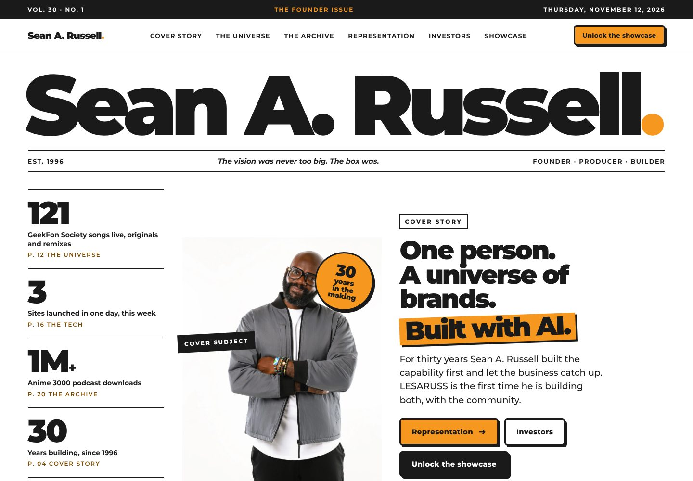
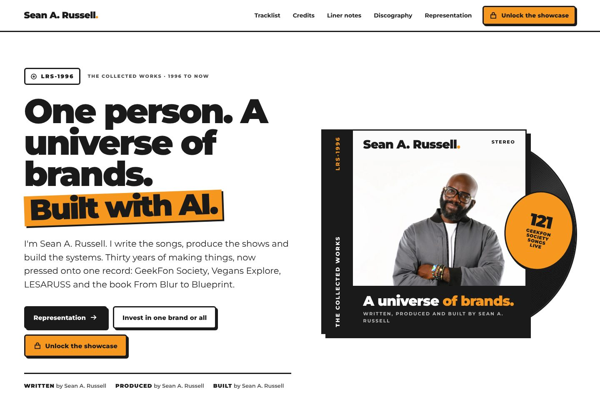
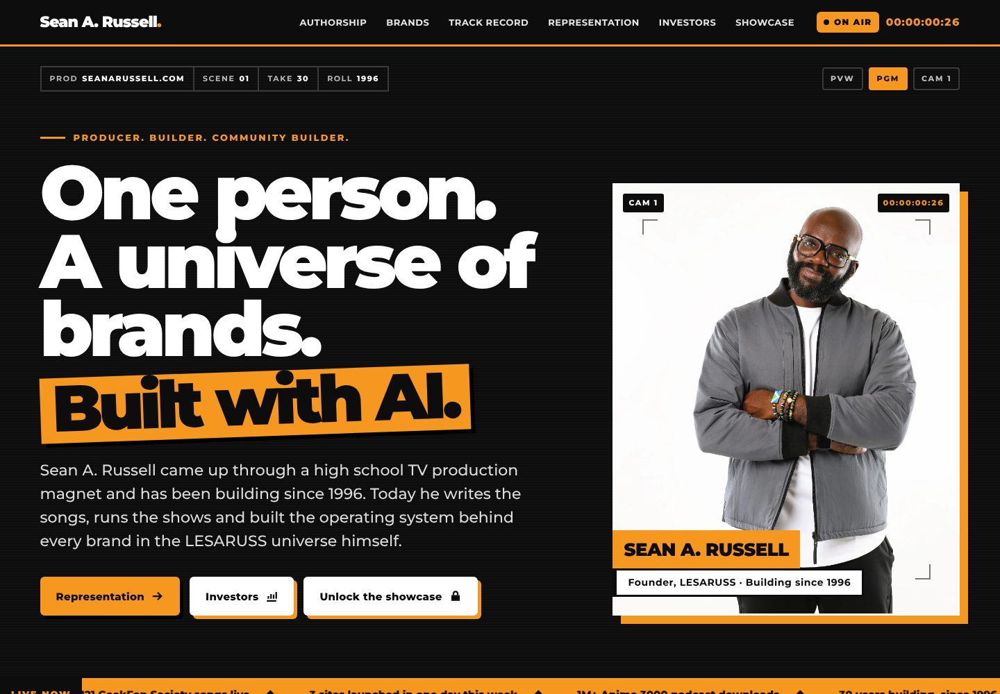
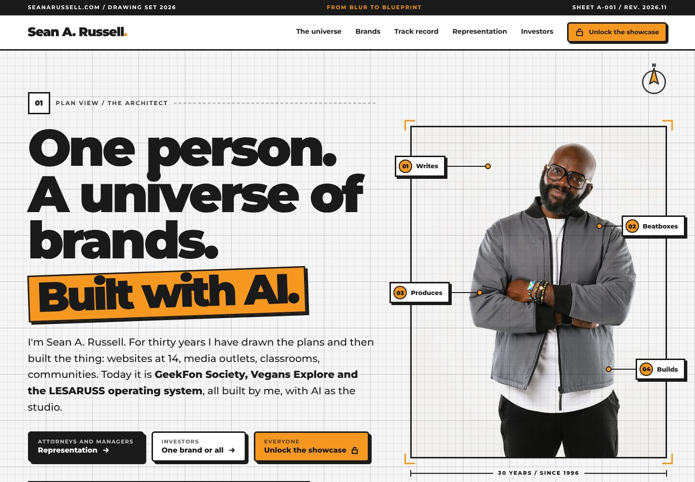

<title>SeanARussell.com Looks</title>
<meta name="claude:viewport-fit-sides" content="cover">
<link rel="stylesheet" href="https://fonts.googleapis.com/css2?family=Montserrat:wght@500;700;800;900&display=swap">
<style>
/* Layout: four looks as cards, four across on desktop, each opens its two real pages. Single light theme by choice (current seanarussell.com colors). */
:root{--ink:#1a1a1a;--paper:#f5f5f5;--white:#fff;--orange:#F69820;--orange-text:#7d4a00;--mute:#4d4d4d;color-scheme:light}
*{box-sizing:border-box}
body{margin:0;background:var(--paper);color:var(--ink);font-family:Montserrat,Arial,Helvetica,sans-serif}
.wrap{padding-left:max(16px,env(safe-area-inset-left,0px));padding-right:max(16px,env(safe-area-inset-right,0px))}
header{background:var(--white);border-bottom:3px solid var(--ink)}
header .wrap{padding-block:22px}
.mark{font-weight:900;font-size:20px;letter-spacing:-.02em}
.mark i{font-style:normal;color:var(--orange)}
h1{font-size:clamp(26px,3.4vw,44px);font-weight:900;letter-spacing:-.03em;line-height:1.05;margin:12px 0 8px;text-wrap:balance}
.lede{font-size:16px;line-height:1.55;max-width:70ch;margin:0;color:var(--mute)}
main .wrap{padding-block:28px}
.grid{display:grid;grid-template-columns:repeat(4,minmax(0,1fr));gap:22px}
.card{background:var(--white);border:3px solid var(--ink);box-shadow:8px 8px 0 var(--ink);display:flex;flex-direction:column;min-width:0}
.card img{width:100%;aspect-ratio:1440/1000;object-fit:cover;object-position:top;border-bottom:3px solid var(--ink);display:block}
.body{padding:16px;display:flex;flex-direction:column;gap:10px;flex:1}
.tag{font-size:11px;font-weight:800;letter-spacing:.14em;text-transform:uppercase;color:var(--orange-text)}
.card h2{font-size:22px;font-weight:900;letter-spacing:-.02em;margin:0}
.card p{font-size:14px;line-height:1.5;margin:0;color:var(--mute);display:-webkit-box;-webkit-line-clamp:4;-webkit-box-orient:vertical;overflow:hidden}
.btns{display:flex;flex-direction:column;gap:8px;margin-top:auto}
.btn{display:block;text-align:center;font-weight:800;font-size:14px;padding:11px 14px;border:3px solid var(--ink);border-radius:6px;text-decoration:none;color:var(--ink);background:var(--white)}
.btn.go{background:var(--orange)}
.btn:focus-visible{outline:3px solid var(--ink);outline-offset:3px}
.pick{margin-top:30px;background:var(--white);border:3px solid var(--ink);padding:20px}
.pick h3{margin:0 0 8px;font-size:18px;font-weight:900}
.pick p{margin:0;font-size:15px;line-height:1.55;max-width:80ch}
@media (max-width:1100px){.grid{grid-template-columns:repeat(2,minmax(0,1fr))}}
@media (max-width:560px){.grid{grid-template-columns:1fr}.card{box-shadow:5px 5px 0 var(--ink)}}
</style>

<header><div class="wrap">
  <div class="mark">Sean A. Russell<i>.</i></div>
  <h1>Four looks for SeanARussell.com</h1>
  <p class="lede">Each one is a real, working site: the front door, plus the Representation page you send to attorneys and managers. Same colors as your site today, same facts, four completely different worlds. Open them on your phone too.</p>
</div></header>

<main><div class="wrap">
  <div class="grid">
    <article class="card">
      
      <div class="body">
        <span class="tag">Look 1</span>
        <h2>Front Page</h2>
        <p>You are the cover story. Your name runs as the masthead, the proof numbers are the cover lines, and the site reads like an issue. Representation is a newspaper special report.</p>
        <div class="btns"><a class="btn go" href="front-page/index.html">Open the front door</a><a class="btn" href="front-page/representation.html">Open Representation</a></div>
      </div>
    </article>
    <article class="card">
      
      <div class="body">
        <span class="tag">Look 2</span>
        <h2>Liner Notes</h2>
        <p>Your career as an album. Vinyl sleeve hero, your brands as the Side A tracklist, "written, produced and built by" credits. Representation is the inner sleeve with a split sheet.</p>
        <div class="btns"><a class="btn go" href="liner-notes/index.html">Open the front door</a><a class="btn" href="liner-notes/representation.html">Open Representation</a></div>
      </div>
    </article>
    <article class="card">
      
      <div class="body">
        <span class="tag">Look 3</span>
        <h2>Showreel</h2>
        <p>A live broadcast. On air tally, timecode, slate, lower thirds and a rundown as the menu, from your TV production roots. Representation is a call sheet with a clapperboard form.</p>
        <div class="btns"><a class="btn go" href="showreel/index.html">Open the front door</a><a class="btn" href="showreel/representation.html">Open Representation</a></div>
      </div>
    </article>
    <article class="card">
      
      <div class="body">
        <span class="tag">Look 4</span>
        <h2>Blueprint</h2>
        <p>From Blur to Blueprint, as a drawing set. Grid paper, numbered sheets, callouts and a legend, with you as the architect of the universe. Representation is the plan for the team you need.</p>
        <div class="btns"><a class="btn go" href="blueprint/index.html">Open the front door</a><a class="btn" href="blueprint/representation.html">Open Representation</a></div>
      </div>
    </article>
  </div>
  <section class="pick">
    <h3>How to pick</h3>
    <p>Tell me the one you want, or mix them (for example, one look's front door with another's Representation page). I build the winner into the live site right away. Each designer listed new copy lines that need your OK, and I'll go through those with you before anything goes live.</p>
  </section>
</div></main>
